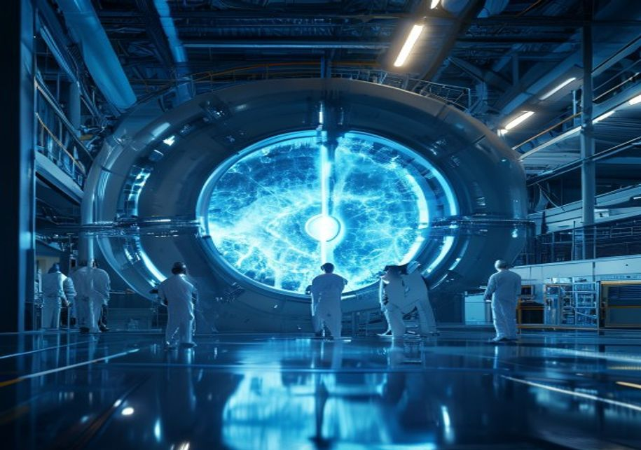

| 03 | Nuclear fusion is approaching technical feasibility, but commercialization remains a decade away. Private investme. |
| 04 | Nuclear Fusion Is Approaching Technical Feasibility but Commercialization Remains a Decade Away Fusion technology is advancing but remains unproven at commercial scale. Key engineering challenges (plasma stability, materials, tritium breeding) ar. Executives should base decisions on demonstrated milestones, not company proj. |
| 06 | Private Investment Is Accelerating Fusion Development Beyond Government-Led Projects Private investment has exceeded $6 billion, accelerating development. The 'valley of death' between demonstration and commercial scale is a key ris. Due diligence should focus on funding runway and milestone achievement. |
| 08 | Fusion's Economic Competitiveness Hinges on Overcoming Engineering and Cost Hurdles Fusion LCOE projections are highly uncertain and range from $50 to over $200/. Fusion may be more competitive in niche applications (industrial heat, hydrog. Executives should base decisions on realistic cost assessments and monitor tr. |
| 11 | Future action agenda |
| 12 | About this research |

Nuclear fusion is approaching technical feasibility, but commercialization remains a decade away. Private investment has surged past $6 billion globally, accelerating development beyond government-led projects. However, key engineering challenges-such as tritium supply and materials durability-remain unresolved, and no comprehensive regulatory framework exists. The evidence base is limited: many cost and timeline projections rely on company announcements rather than independent validation. For decision-makers, the immediate implication is to monitor and selectively partner with leading ventures while avoiding large-scale commitments until demonstration plants prove viability. The risk of delay or cost overruns is high, but early engagement could yield strategic advantages in supply chains and talent. The recommended next step is to conduct a structured due diligence on three to five fusion startups, focusing on technical milestones, funding runway, and regulatory engagement.
Nuclear fusion has long been considered the holy grail of energy-a virtually limitless, clean, and safe power source. In recent years, significant progress has been made in both magnetic confinement (tokamaks and stellarators) and inertial confinement approaches. The ITER project in France, the world's largest tokamak, is on track to achieve first plasma in the late 2020s, though its timeline has slipped multiple times. Private ventures like Commonwealth Fusion Systems (CFS) are pursuing compact, high-field tokamaks using high-temperature superconductors, aiming for net energy gain by 2026.
Meanwhile, alternative approaches such as magnetized target fusion (General Fusion) and electrostatic confinement (TAE Technologies) offer different trade-offs in complexity and cost.
Despite these advances, key physics and engineering challenges remain. Sustaining a stable plasma for long durations, managing extreme heat fluxes, and developing materials that can withstand neutron bombardment are all unsolved problems. The transition from experimental devices to pilot plants requires scaling up by orders of magnitude in size, power, and reliability. No fusion device has yet produced more energy than it consumes (net gain), though the National Ignition Facility achieved a scientific breakeven in 2022 using inertial confinement. The path from scientific breakeven to commercial viability is long.
For executives, the key takeaway is that fusion is no longer a distant fantasy but a real engineering challenge with a credible timeline. However, the remaining technical hurdles are substantial and could cause delays. Investment decisions should be based on demonstrated progress in plasma performance, materials testing, and systems integration, not on optimistic press releases. The available public record here is clear: company timelines are not independently verified, and peer-reviewed validation of key mileston.
The fusion funding landscape has shifted dramatically in the past decade. Government programs like ITER and national fusion labs remain important, but private investment has surged. By 2024, private fusion companies had raised over $6 billion cumulatively, with major rounds from CFS ($2 billion), TAE Technologies ($1.2 billion), and General Fusion ($400 million). This influx of capital is driving rapid iteration and attracting top talent from academia and industry. The number of fusion startups has grown to over 30 globally, concentrated in the US, UK, China, and Canada.
Private investment brings a different risk appetite and timeline pressure. Startups are targeting demonstration plants by the early 2030s, a pace that government projects cannot match. However, the 'valley of death' between demonstration and commercial deployment is a critical risk. Many startups may run out of funding before achieving commercial viability. Strategic investors and corporate venture arms are increasingly participating in funding rounds, seeking early access to technology and talent.
For decision-makers, the implication is that the fusion ecosystem is becoming more dynamic and competitive. Early engagement with startups can provide strategic advantages, but due diligence must be rigorous. The available public record includes funding amounts from company announcements and industry reports, but future funding rounds and valuation are uncertain. Companies should track the burn rate and milestone achievement of potential partners.
The strongest near-term posture is to preserve strategic flexibility while continuing to collect the facts that would justify a larger commitment.
A major energy company's CEO is considering a $200 million investment in a leading fusion startup that promises a demonstration plant by 2030. The startup has strong technical talent and significant private backing, but the technology is unproven at scale. Competitors are also exploring partnerships.
Proceed with a staged investment: commit $50 million initially for a strategic partnership and option to invest further upon achievement of key milestones (e.g., net energy gain, sustained plasma operation). This limits downside while securing a seat at the table.
Avoid overpaying for early-stage equity; ensure milestone-based funding triggers. Monitor competitor moves and regulatory developments. Be prepared to walk away if milestones are missed.
The economic viability of fusion energy is a subject of intense debate. Proponents argue that fusion's fuel is virtually free and abundant, and that advanced designs can achieve high efficiency and low operating costs. However, the capital costs of fusion plants are expected to be very high, potentially exceeding $10 billion for the first commercial units. The levelized cost of electricity (LCOE) projections range from $50/MWh to over $200/MWh, depending on assumptions about availability, lifetime, and financing costs.
Comparisons with renewables are instructive. Solar and wind LCOE have fallen below $30/MWh in many regions, and battery storage costs are declining rapidly. Fusion's value proposition may lie in providing baseload power and high-temperature heat for industrial processes, rather than competing directly with variable renewables. In a decarbonized grid, fusion could complement renewables by providing firm, dispatchable power.
For executives, the key takeaway is that fusion's economic competitiveness is not guaranteed. Investment decisions should be based on a realistic assessment of costs and a clear understanding of the market niche. The available public record includes company projections and independent analyses, but no validated cost data exists for commercial fusion plants. Companies should monitor cost trends and be prepared to pivot if fusion does not achieve cost parity.
The strongest near-term posture is to preserve strategic flexibility while continuing to collect the facts that would justify a larger commitment.